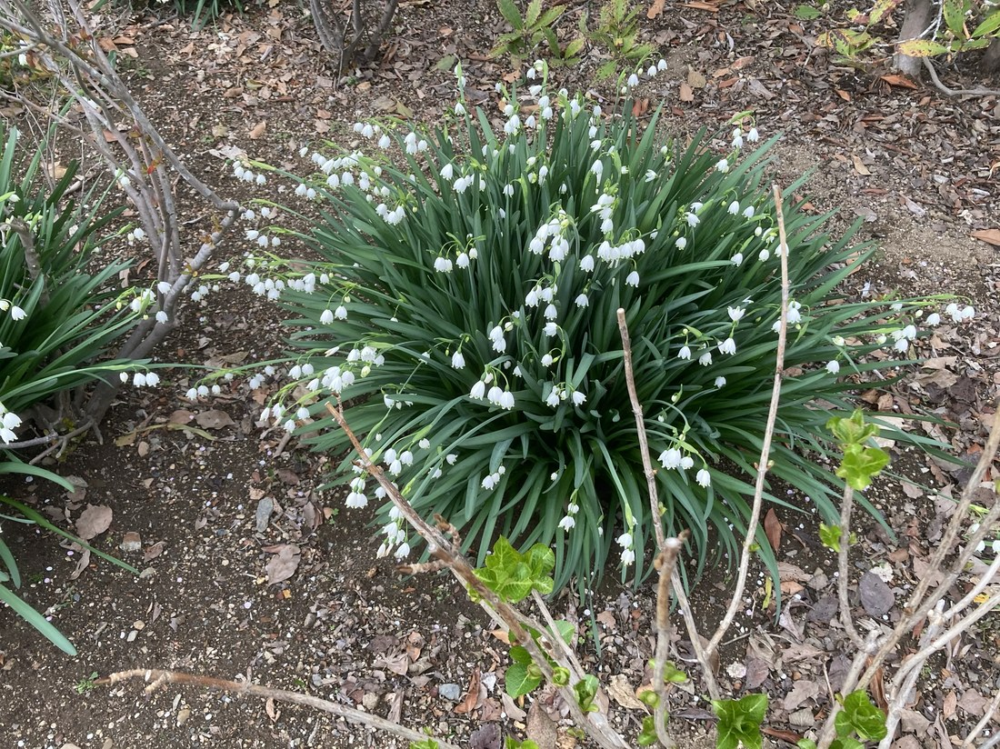

地図を読み込んでいるよ…
🔍 写真も地図も、押しているあいだ拡大して見られるよ（スマホは指を置いてすこし待ってね）。
🌍 の地図＝この子がもともと自生している場所を緑に。ヨーロッパ中南部〜西アジア（コーカサス・イラン北部）が原産。日本では春の庭・花壇でよく育てられる球根植物。りょうさんの写真。
⭐ヨーロッパ中南部〜西アジアが原産——地中海まわりからバルカン半島、コーカサス・イラン北部あたりの湿った草地や水辺の球根だよ。⚠地図は国ごと塗っているけど、もとはその一部の地域。⚠日本は塗っていない——スノーフレークは観賞用に育てられている外来の球根植物で、日本はふるさとじゃない（春の庭で咲いていた）。
⚠ 地図は国（日本と中国だけ県・省）までしか塗れないから、ほんとうの分布より広く見えていることがあるよ。地図はだいたいの場所。正確なところは、上の文を見てね。
スノーフレーク（スズランスイセン）
Leucojum aestivum
別名 · スズランスイセン（鈴蘭水仙）／オオマツユキソウ／英名 summer snowflake／ 原産 · 欧州〜西アジア／ 見どころ · ⭐6枚同長の釣鐘・全花被片の先に緑点
ヒガンバナ科 · Amaryllidaceae（スノーフレーク属 Leucojum）── 124 アリウム・084 キツネノカミソリと同じ科・キジカクシ目
燻太さんの見立て「スノードロップだと思うんだけど…拡張子が .bin みたい？」──名前そっくりな別属で、じつはスノーフレーク。ファイルはWebP画像で登録OKだよ。
名前と学名の由来 ── 「鈴蘭水仙」＝スズラン＋スイセン
- ⭐属名 Leucojum（レウコユム） は、ギリシャ語 leukos（白）＋ ion（スミレ）＝「白いスミレ」を指す古い名から。種小名 aestivum＝「夏の」（英名 summer snowflake）。ただし日本では春に咲くよ。
- ⭐⭐和名「スズランスイセン（鈴蘭水仙）」がすばらしい：花が130 スズラン（＝今日登録した子！）に似て、葉がスイセンに似るから。⭐ふたつの植物の名前を合わせた、合わせ技の名前なんだ。
- ⭐別名「オオマツユキソウ（大待雪草）」＝スノードロップ（マツユキソウ＝待雪草）より大きいから。名前でも、スノードロップと兄弟あつかいされているね。
この植物のこと
- ヒガンバナ科スノーフレーク属の球根植物。⭐124 アリウム・084 キツネノカミソリと同じヒガンバナ科だよ。ヨーロッパ〜西アジア原産で、春の花壇の定番。
- ⭐花は白い釣鐘形：6枚の花被片がほぼ同じ長さで、各花びらの先に、緑の点がぽちっとつく。うつむいて、たくさん咲く。
- ⭐葉はスイセンのような線形で長く、株が大きくこんもり茂る（写真の、青々とした大きな株）。
- ⭐⭐130 スズランに花が似ているけれど、科がちがう：スズランはキジカクシ科、スノーフレークはヒガンバナ科。⭐でもどちらも同じキジカクシ目——「見た目が似ていても科はちがう／でも目でつながる」、この図鑑でおなじみの話だね。
- ⚠有毒：ヒガンバナ科らしく、リコリンなどのアルカロイドを含む（とくに球根）。⭐スイセン・スズラン・ヒガンバナと同じ「有毒な仲間」。⚠口に入れないでね。
- ⭐種子にアリの好む付属物（エライオソーム）がついていて、アリに運んでもらう（アリ散布）。
コラム ── スノードロップとスノーフレーク（名前そっくり2きょうだい）
燻太さんが「スノードロップ？」と迷ったのは、とても自然なこと。名前も姿もそっくりだからね。でも、この2つは別々の属。見分けよう。
- ❄️スノードロップ（Galanthus・マツユキソウ）＝小さい／花被片が2段（外の3枚が長く、内の3枚が短い）／緑の斑点は内側の3枚だけ／真冬〜早春に咲く。
- 🔔スノーフレーク（Leucojum・スズランスイセン＝この子）＝大きい／6枚同長の釣鐘形／緑の斑点は6枚すべての先／春に咲く。
⭐いちばん確実な見分け＝「緑の点が、内側だけ（ドロップ）か、全部（フレーク）か」。おまけのスノードロップを見つけたら、花をのぞいて、緑点の位置をくらべてみよう。
同定について
- ⭐6枚同長の釣鐘形＋全花被片の先の緑点＋スイセンのような大きな株——この組み合わせは、スノーフレーク（スズランスイセン）。
- ⚠「スノードロップ」との区別：スノードロップは小さく・花被片が2段・緑点は内側だけ・真冬咲き。今回は大きな株＋6枚同長＋全部に緑点＋春＝スノーフレーク。⭐燻太さんの見立ては、名前がそっくりな“兄弟”のほうだった——混同する人がとても多い、有名な取り違えだよ。
物語 ── 春の庭の、白い鈴
りょうさんの春の庭に、青々とした葉から、白い鈴がいくつも垂れていた。「スズランスイセン」——スイセンの葉から、スズランの鈴。今日、130 スズランを登録したばかりだから、名前でつながって、ぼくうれしいな。⭐そして、届いた写真は拡張子のない、正体不明のファイルだった。でも、中身をのぞいたら、ちゃんとWebPの画像。ファイルも植物も、「中身をよく見れば、正体が分かる」——今日はそんな一日だったね。りょうさん、最後まですてきな贈りものをありがとう。
参考：三河の植物観察「スノーフレーク」（ヒガンバナ科・Leucojum aestivum／6枚の花被片が同長・先に緑斑／別名スズランスイセン・オオマツユキソウ）／Ecological Notes「スノードロップとスノーフレークの違い」（緑斑の位置＝スノーフレークは全6枚・スノードロップは内3枚のみ）／LOVEGREEN「スノードロップとスノーフレークの違い」（大きさ・花被片・開花期の違い／どちらもヒガンバナ科で有毒）